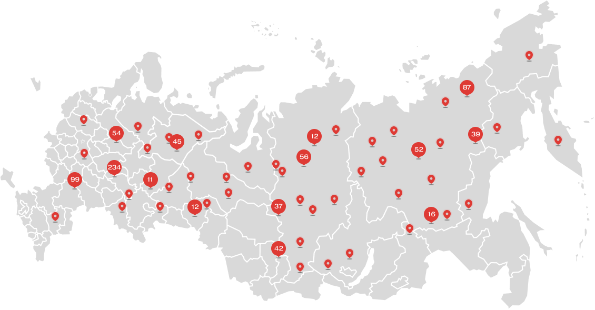

Мой Роспотребнадзор
На этой странице вы найдете все необходимую информацию, связанную с Роспотребнадзором и его контрольно-надзорной деятельностью, а также узнаете, как эти аспекты связаны с проектом «КЭП — консультация эпидемиолога»

-
Найди свое территориальное Управление Роспотребнадзора и центр гигиены и эпидемиологииИспользуйте нашу удобную карту с функцией поиска, чтобы найти ближайшее к вам территориальное управление Роспотребнадзора и центр гигиены и эпидемиологии. Здесь вы сможете получить актуальную информацию и поддержку, связанную с соблюдением санитарно-эпидемиологических норм и правил.
-
О Роспотребнадзоре, его органах и организацияхРоспотребнадзор, или Федеральная служба по надзору в сфере защиты прав потребителей и благосостояния человека, является ключевым государственным органомПодробнее
-
Контрольно-надзорная деятельность РоспотребнадзораУзнайте подробности о контрольно-надзорной деятельности Роспотребнадзора и о том, какие меры принимаются для обеспечения соблюдения санитарно-эпидемиологических стандартов на предприятиях и в организациях.Подробнее
-
Разрешительные документы Роспотребнадзора, необходимые для получения на этапе открытия предприятияУзнайте, какие разрешительные документы требуются на этапе открытия предприятия и как получить необходимые разрешения у Роспотребнадзора.Подробнее
-
Соблюдение санитарно-эпидемиологического законодательства в процессе осуществления предпринимательской деятельностиПознакомьтесь с основами соблюдения санитарно-эпидемиологического законодательства в 12 ключевых отраслях предпринимательства.Подробнее
-
Обжалование решений контрольных (надзорных) органовЕсли у вас возникли вопросы или несогласие с решением контрольных органов, узнайте, как правильно обжаловать решение и защитить свои интересы.Подробнее
-
Государственные услуги, предоставляемые РоспотребнадзоромПолучите доступ к государственным услугам, предоставляемым Роспотребнадзором, через официальный портал Госуслуги:Перейти в Госуслуги
Мы стремимся обеспечить вас всей необходимой информацией и поддержкой, чтобы ваше предприятие было безопасным и соответствовало всем санитарно-эпидемиологическим требованиям.
Пользуйтесь нашими ресурсами и участвуйте в обеспечении общественного здоровья и безопасности.